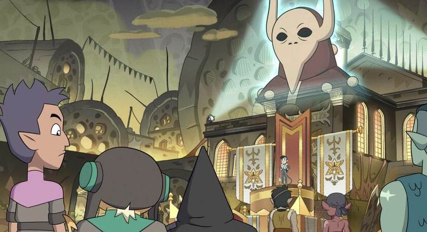

After watching S2 E11: Follies at the Coven Day Parade.

Follies at the Coven Day Parade — match each word to its meaning.
Use all seven words to retell what happened. Speak first — no writing needed!
Classify the claim in bold: Truth = correct information; Lie = the speaker knows it is false; Mistake = the speaker sincerely believes something false. Use only this episode. Explain your choice aloud.
Click a phrase, then click its English definition. You can try again if you make a mistake.
Choose one storyline. You will write only about these characters.
Is it ever okay to lie to someone you love in order to protect them?
You have completed the activities and written your own character message.